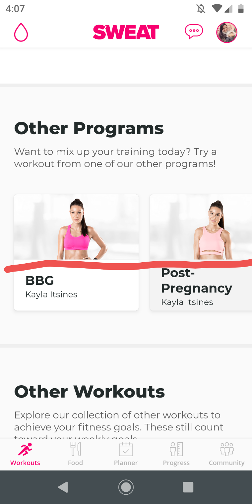
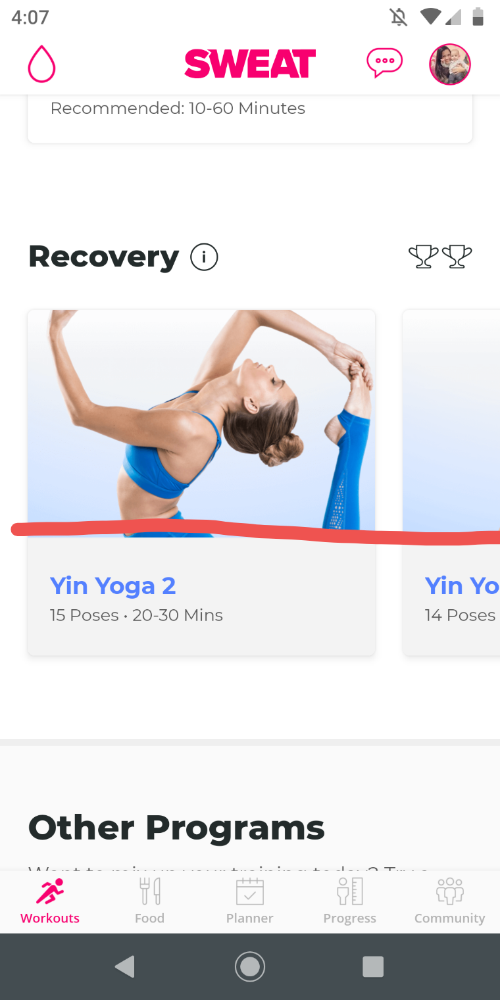

Introduction
There are basic rules and principles to web design that make websites more appealing, user-friendly and
efficient. This is a small sample of how the principles are present in day-to-day browsing on a mobile device.
Visual Hierarchy

The Thrive Market website is a good example of visual hierarchy -
is the order in which human eye perceives what it sees. In this case, the viewer will notice the product
picture and the "add" button before they even see the price or the full description of the product, making
it very easy for them to add that product to the cart.
Hick's Law

The Zulily website is one of my most visited. They offer a wide
range of daily deals that would be hard to sort through, had it not been for the good use of Hick's Law.
Hick's Law states that with every additional choice increases the time required to take a decision. So
the designers chose to group products in specific categories that many times go beyond brand, showing only
one category at a time as you scroll down. The viewer can't really go past any one category without reading it and
deciding whether or not to click on that collection.
Law of Continuity


Sweat is a very popular fitness program amongst women. They include
a variety of other programs within based on your goals and fitness levels. Each section of their website
shows a horizontal scroll with a list of programs or routines, are perfectly aligned and contingeous. This
is a great example of the Law of Continuity, which states that even when there's an intersection between
objects, we tend to perceive lines as a continuous uninterrupted entities.